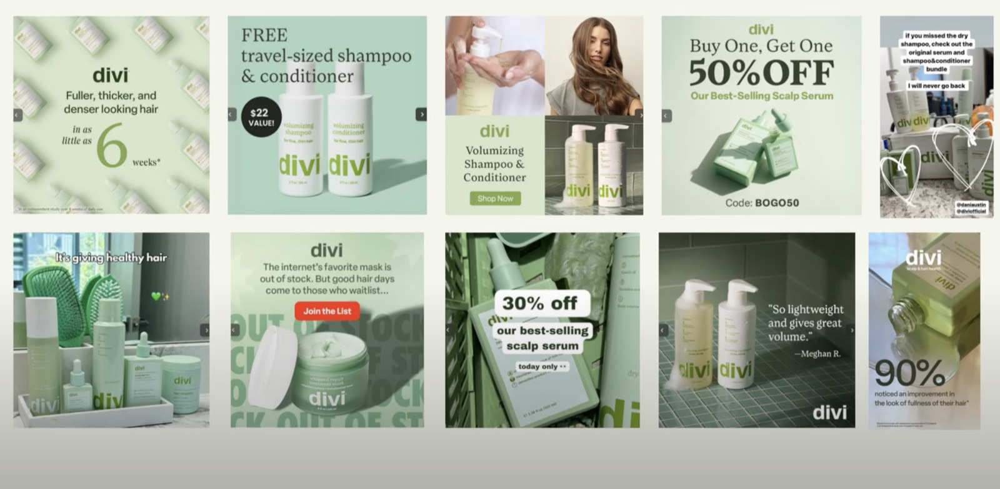
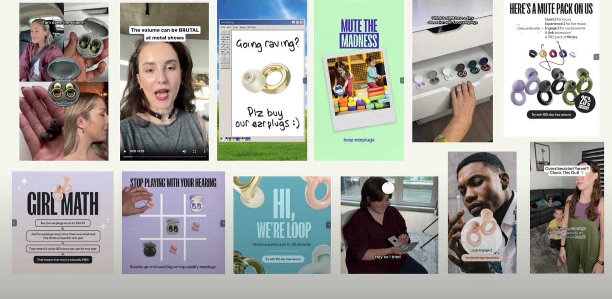
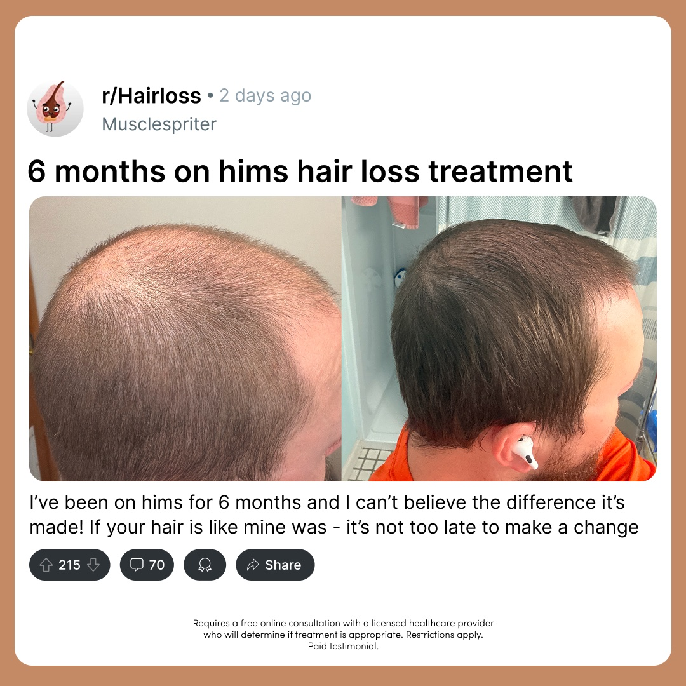
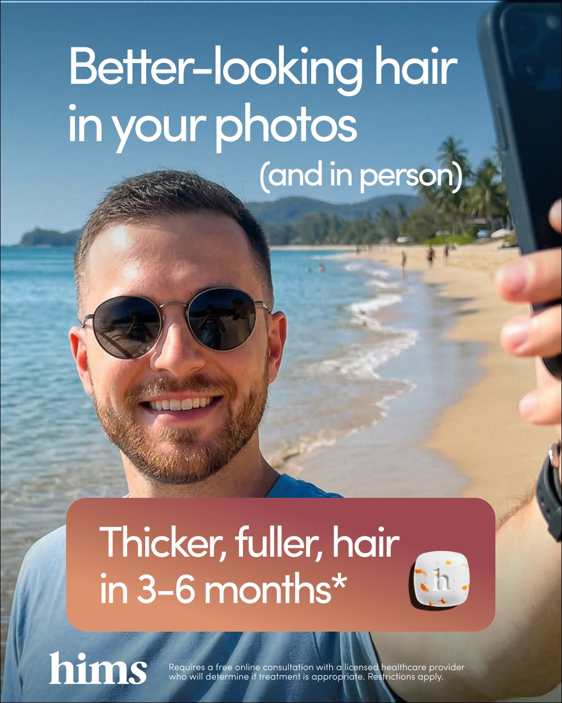
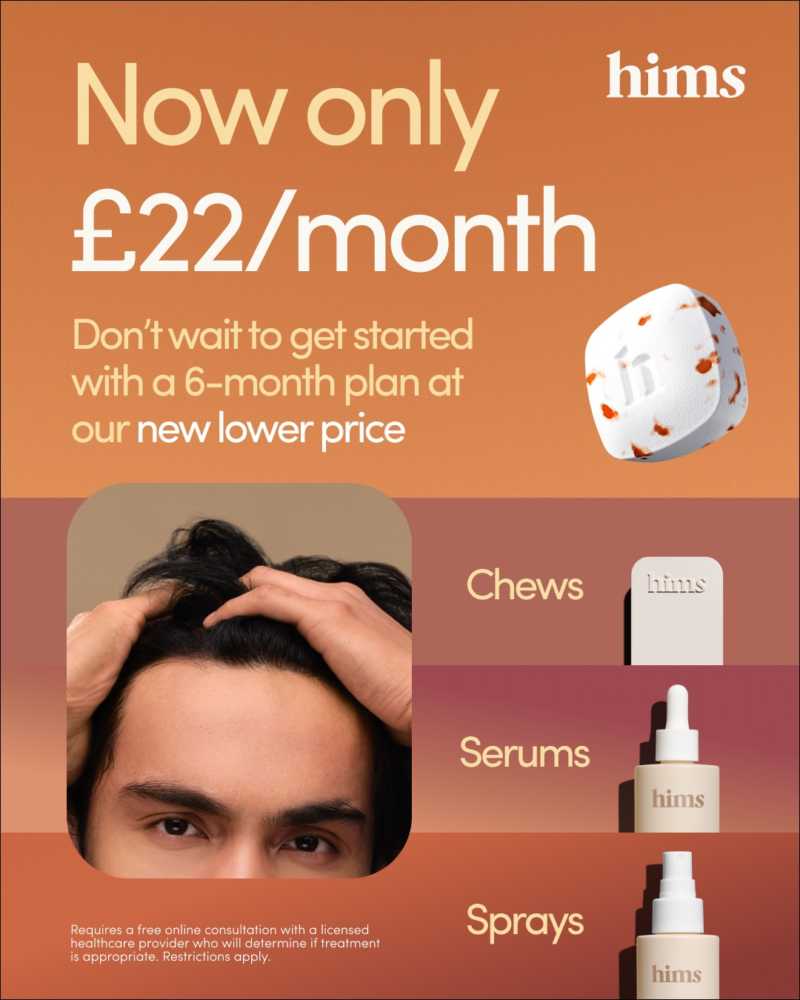

Feria Effix · Diversidad creativa en Meta
Cómo planear, escribir y leer creativos que Meta trate como nuevos, en los tres niveles del embudo.
Jacobo · Social Marketing
Pregunta para abrir

Cuenta A · todo igual

Cuenta B · nada parece anuncio
Un anuncio nunca vende solo · Social Marketing
La respuesta
Cuidar el manual de marca con pinzas desgasta en pauta. Aquí se escribe para vender, no para escribir bonito.
Meta es una IA
Un anuncio nunca vende solo · Social Marketing
Tres cifras para llevarse
89 %
de las veces, un motivador distinto desbloquea una audiencia nueva.
240+
conceptos de un solo producto: 12 personas × 20 ángulos.
3 s
es lo que Meta compara para decidir si tu anuncio es nuevo.
Regla de oro
La similitud visual anula la diferencia narrativa.
Un anuncio nunca vende solo · Social Marketing
Segmentación
1
Meta transcribe el video y lo reparte según lo que se dice y quién sale. Segmentar a mano le quita eficiencia.
2
Meta ya sabe en qué momento de compra está cada persona. Tu trabajo: contenido para todos los niveles en una sola campaña.
3
Dentro de un concepto, la variación ya no es de texto. Es de formato: pantalla dividida, pantalla verde, crudo.
Un anuncio nunca vende solo · Social Marketing
El ecosistema
Cerca del 1 % compra la primera vez. El resto necesita ver la marca unas 15 veces, y esos anuncios no pueden decir lo mismo.
Día 1
Los tapones también sirven en una fiesta donde la música te molesta.
“Qué bueno.” Sigue de largo.
Día 5
También sirven para concentrarte cuando estudias o manejas.
Lo recuerda.
Día 10
Otro anuncio, otro ángulo.
Entra a la página. No compra.
Día 14
“Solo por hoy, regalamos el segundo par.”
Compra.
¿Cuál vendió? Los cuatro.
Un anuncio nunca vende solo · Social Marketing
El ecosistema
Nunca el creador. A quien no te conoce no le importa tu historia: le importa qué saca del minuto que te regala.
Un solo anuncio trae ventas por impulso, las primeras que se mueren. Lo que escala es el ecosistema que lleva de no conocerte a comprarte.
Tu trabajo no es hacer un buen anuncio. Es aportar diversidad al ecosistema.
Un anuncio nunca vende solo · Social Marketing
El ecosistema en video
Un anuncio nunca vende solo · Social Marketing
La herramienta
4 · Formato
Testimonio, voz en off, pantalla verde, unboxing
3 · Dolor
El síntoma concreto. Uno por guion: el pelo en la almohada
2 · Deseo
Deseo principal de mercado: la razón de compra. Volver a dormir
1 · Sub-avatar
A quién le hablas: la mamá primeriza que no reconoce su cuerpo
Producto
La base. No cambia.
Cambias una capa: otro creativo. Cambias todas: un concepto nuevo.
Un anuncio nunca vende solo · Social Marketing
El pastel aplicado
| Sub-avatar | Deseo | Dolor | Formato |
|---|---|---|---|
| Mamá primeriza | Lo que vive después del parto | Estrías y piel flácida | Testimonio |
| Ejecutiva de 40 | La baja energía | Ojeras y cara de cansancio | Animación con IA |
| Deportista de 35 | El cuidado de la piel | Manchas por el sol | POV aspiracional |
El mismo frasco de colágeno con magnesio. Tres anuncios que Meta ve como nuevos y que le llegan a tres personas distintas.
Un anuncio nunca vende solo · Social Marketing
Por qué te compran
Lo que el producto hace. Hidrata, desinflama, huele todo el día.
La razón por la que te compran, o ángulo de venta. Entre más específico, mejor.
El síntoma que vive todos los días y que la hace reconocerse en el video.
Un jabón: “la fragancia dura todo el día” es el beneficio. Atraer a su pareja es la razón de compra.
Un anuncio nunca vende solo · Social Marketing
Sub-avatar
La misma crema hidratante, dos personas:
Quiere verse radiante para salir. Le duele la resequedad.
Quiere verse más joven. Le duelen las arrugas.
Meta busca gente parecida a quien sale en el video. Por eso se rotan caras y edades, no solo formatos.
Un anuncio nunca vende solo · Social Marketing
Un producto, cuatro sub-avatares
Un anuncio nunca vende solo · Social Marketing
Los primeros 3 a 5 segundos
Le habla a millones que no van a comprar
“Si llevas más de cinco años con tu novio, escucha esto.”
Le habla a una sola, y esa se queda
“Llevo cinco años con mi novio y nunca tengo ganas.”
El arranque define el sub-avatar, el deseo y el nivel. Un dolor por guion.
Un anuncio nunca vende solo · Social Marketing
Hooks que segmentan
Un anuncio nunca vende solo · Social Marketing
Sub-avatares en la práctica
Tiene relaciones y paga las consecuencias al otro día
Deseo: el sexo sin sufrir después
Vive con picazón y compra óvulos en la droguería
Deseo: dejar de maquillar el problema
Siente un olor raro y vive con infecciones
Deseo: disfrutar tranquila
Se lava por fuera todos los días y cree que basta
Ya compara soluciones: es de otro nivel
Cambia el sub-avatar, el deseo y el síntoma con el que la llamas. Cuatro anuncios, un solo frasco.
Un anuncio nunca vende solo · Social Marketing
Un ingrediente, tres avatares
| Avatar | Dolor | En la vida real | En cámara |
|---|---|---|---|
| La de ciclos irregulares | Le llega cuando quiere | Toalla en la cartera todo el mes | Cuenta los días de atraso con los dedos |
| La del vello en la cara | El desbalance hormonal | Se afeita más de lo que quisiera | Se pasa la mano por la barbilla frente al espejo |
| La que entrena y no baja | La resistencia a la insulina | Come bien, entrena y nada | La báscula que no se mueve |
El mismo inositol respalda los tres. Tres avatares, tres dolores, tres anuncios distintos.
Un anuncio nunca vende solo · Social Marketing
Los niveles
TOP
No te conoce. Es la mayoría. Puede que ni sepa que tiene el problema.
MID
Sabe que tiene el problema y busca opciones.
BOTTOM
Ya te conoce. Son los menos.
Meta ya sabe en qué momento está cada persona. Tu trabajo: contenido para los tres niveles, en una sola campaña.
Un anuncio nunca vende solo · Social Marketing
Los niveles
Un síntoma muy específico y una transformación. El producto llega tarde y sin agresividad.
“Princesa, si todos los días ves esto y te pica.”
Se le pide: hook y tráfico barato
Beneficios, objeciones rotas y comparación con lo que ya probó.
“Deja de probar remedios caseros y prueba esto.”
Se le pide: retención y clics
Oferta con ángulo, urgencia y prueba social desde el primer segundo.
“El probiótico que me quitó el olor ahorita tiene 35 %.”
Se le pide: ventas
Un anuncio nunca vende solo · Social Marketing
Los niveles en video
Un anuncio nunca vende solo · Social Marketing
Antes de obsesionarse con los niveles
Casi todo el que entrena ya probó la creatina. Funciona un top que agita un problema que ya siente (“entrenas y no ves resultados”) y un mid que compara (“ya nadie toma creatina en polvo”).
El nivel dice a quién le habla cada video y con qué métrica juzgarlo. No es para llenar casillas: se sigue lo que trae la plata.
El orden importa: el top construye la audiencia que el mid y el bottom convierten.
Un anuncio nunca vende solo · Social Marketing
Cómo clasificar
| Si el arranque… | Es |
|---|---|
| Llama con un problema o un síntoma, sin oferta ni comparación | Top |
| Despeja dudas, rompe una objeción o compara soluciones | Mid |
| Vende con oferta, urgencia, escasez o prueba social | Bottom |
Dos que engañan
Arranca con el síntoma y cierra con “aprovecha la promo” → top con cierre de oferta.
“¿Sabes cuánto cuesta un iPhone 17 en Colombia?” y todo el cuerpo compara precios → mid.
Un anuncio nunca vende solo · Social Marketing
Dos que engañan
Un anuncio nunca vende solo · Social Marketing
Por qué todo empieza arriba
Etapa 0 · Lanzamiento
Nadie te conoce
Etapa 1 · Hay audiencia
Entran mid y bottom
Etapa 2 · Escala
Por cada 5 guiones
Cuando el bottom que más vende sube de frecuencia, el diagnóstico no es “todo va bien”. Es “faltan tops”.
Un anuncio nunca vende solo · Social Marketing
Un probiótico femenino
| Nivel | Primera frase | Qué hace el resto del video |
|---|---|---|
| Top | “Si él termina adentro y a ti te toca el ardor, el flujo y la picazón.” | Agita el síntoma; la solución llega tarde, como consejo de amiga. |
| Mid | “Deja de probar óvulos y remedios caseros: esto se cuida desde adentro.” | Compara con lo que ya probó y rompe una objeción. |
| Bottom | “El probiótico que me quitó el olor ahorita tiene 35 %, pero solo por el enlace.” | Oferta con ángulo, urgencia y prueba social. |
El ganador de un nivel se traslada a los otros dos cambiando solo el arranque. Tres anuncios nuevos de un concepto que ya vendió.
Un anuncio nunca vende solo · Social Marketing
Cómo leer lo que funciona
Si se lleva el 10 % del gasto de la cuenta, Meta le ve potencial. Un retorno de 9 con US$ 30 de gasto es ruido.
Top: hook y tráfico barato. Mid: retención y clics. Bottom: costo por compra o retorno en objetivo.
Unos US$ 500 de gasto, costo por compra bajo el objetivo, y sigue funcionando al duplicarlo a escala.
Ordena por gasto. Reporta al día 7. Si no ha gastado, no es perdedor: es “sin data aún”.
Un anuncio nunca vende solo · Social Marketing
Las columnas, como el recorrido del cliente
| Métrica | Responde | Referencia |
|---|---|---|
| Hook rate | ¿Detienes el scroll? | >30 % bueno · >40 % excelente |
| Hold rate | ¿Retienes? | >25 % en video corto |
| CTR único | ¿El cuerpo empuja al clic? | Contra tus ganadores |
| Load speed | ¿La página recibe a quien llegó? | <70 %: es la web |
| Carrito a compra | ¿El checkout cierra? | Si cae: el checkout |
| CPA y ROAS | ¿Vende? Es la métrica del bottom | Según tu margen |
“Detuve al 30 %. Sostuve al 8. De los que hicieron clic llegó el 70, agregó el 6 y pagó el 40.”
Un anuncio nunca vende solo · Social Marketing
Dónde va el gasto
TOP
Más gasto. Meta lo lleva a la gente fría, la audiencia más grande. Su retorno individual es el más bajo, y está bien.
MID
Poco gasto. El puente entre el top y la compra.
BOTTOM
Mejor retorno, mientras el top le traiga gente.
Si el top no acapara el gasto, el bottom se queda sin a quién venderle. La cuenta se lee completa y se alimenta lo que falta.
Un anuncio nunca vende solo · Social Marketing
Cuánta vida le queda
Top en 1,8: agotó a su público.
Bottom en 1,2: faltan tops arriba.
La frecuencia sube antes que el costo por compra. Es la alerta temprana.
Un anuncio nunca vende solo · Social Marketing
Caso real · ROAS promedio de la campaña: 6,2
| Anuncio | Números | Lectura |
|---|---|---|
| 14 | Más gasto · ROAS 5,8 · frec. 1,85 | Bottom ganador; su audiencia ya se satura. |
| 10 | ROAS 7,1 · frec. 1,64 | Mid ganador. Todavía no es bottom. |
| 12 | Hold 55 % · hook 13 % | Retiene, pero la apertura no se entiende. |
| 6 | ROAS 1,9 · hook 35 % · frec. 1,26 | Es un top: alimenta a los demás. |
Apagar el anuncio 6 por “malo” desploma al anuncio 14. Lo que le falta a esta cuenta son tops.
Un anuncio nunca vende solo · Social Marketing
A veces no es el video
El agua es tu embudo: la conversión de la página y el ticket. Los barcos son tus creativos, con su ROAS. Sube el mar y todos quedan a flote.
Un anuncio nunca vende solo · Social Marketing
Los niveles en imagen

Top · indirecta. Parece un post de foro. No parece anuncio.

Mid. Un hombre común y un beneficio con plazo: 3 a 6 meses.

Bottom · directa. Precio, plan y producto: la orden con dato.
Un anuncio nunca vende solo · Social Marketing
Antes de pautar una imagen
1
Tápale el titular. ¿La imagen sola frena el scroll?
2
¿Se sabe a quién le habla? La persona, la escena y la jerga son el sub-avatar.
3
¿De qué nivel es y coincide con dónde la pautas? Bottom en frío es el error más caro.
4
¿Se lee en 1,5 segundos y dice una sola cosa? De seis a ocho palabras.
5
¿Todo lo que afirma está en la landing? Claims, precio, reseñas, envío.
Un anuncio nunca vende solo · Social Marketing
Tienes un ganador · cuatro frentes
Extraes lo que ganó, el ángulo y el hook, y lo subes de nivel: el top pasa a ser mid.
Lo testeas a otro destino: funnel quiz, advertorial, product page o figura de autoridad.
El mismo concepto en otro formato.
Otra creadora, otro entorno, más crudo.
Ninguno es “cambiarle el titular”. Cada frente le suma diversidad a la cuenta.
Un anuncio nunca vende solo · Social Marketing
Cerrar el ciclo
≥ 20 %
Tasa mínima de anuncios ganadores.
40–50 %
Con un buen ciclo de retroalimentación.
Día 7
Cada anuncio se reporta ese día, exacto.
Una fila del reporte
Anuncio 12 · ganador. Hook 13 %, retención 55 %. Hipótesis: retiene, pero la apertura no se entiende sin volumen. Acción: hook en texto con la frase del anuncio 6.
El número dice dónde. El video dice por qué.
Un anuncio nunca vende solo · Social Marketing
Tu trabajo no es hacer un buen anuncio. Es construir el ecosistema y alimentarlo con lo que te dicen los datos.
Gracias · Jacobo · Social Marketing